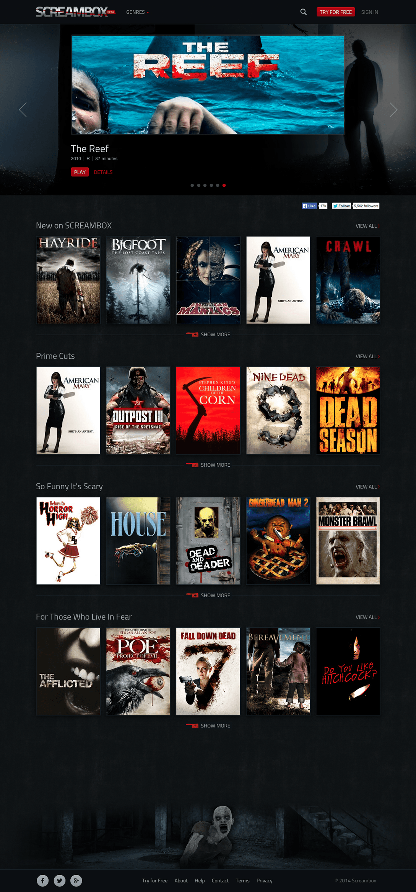
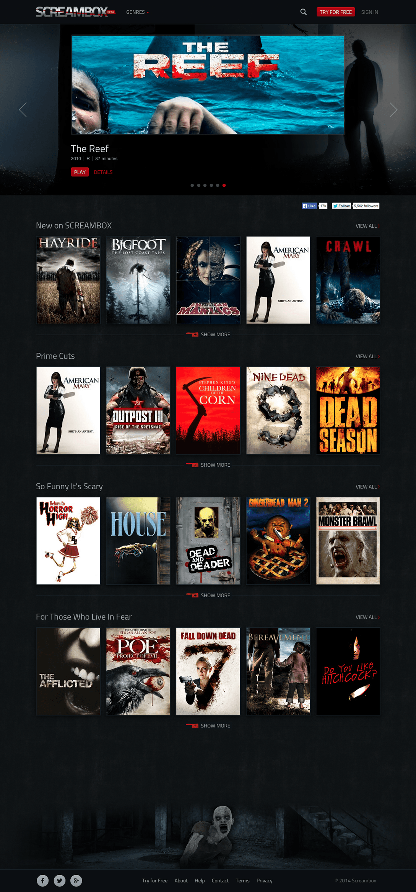

Screambox
Screambox is an on-demand video service for horror movies. The website launched in beta in the summer of 2014.
Visit Screambox.

Screambox is an on-demand video service for horror movies. The website launched in beta in the summer of 2014.
